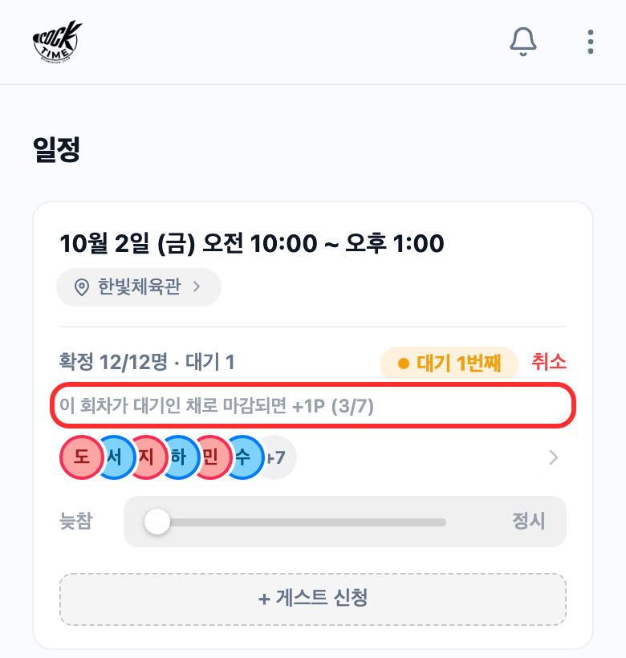
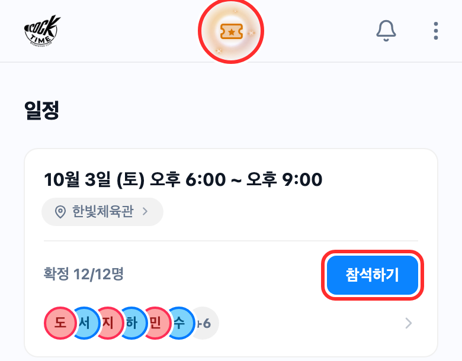
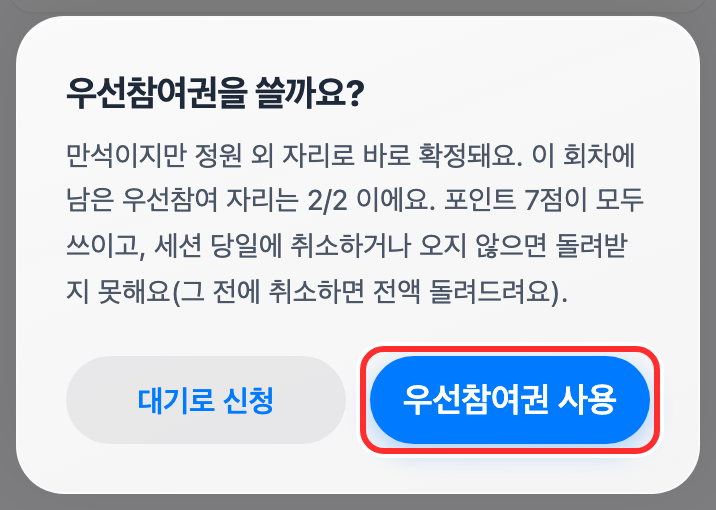
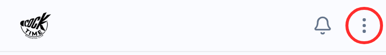
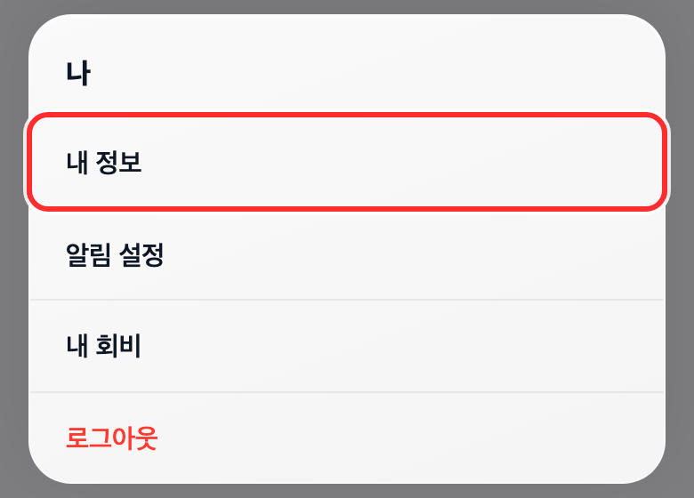
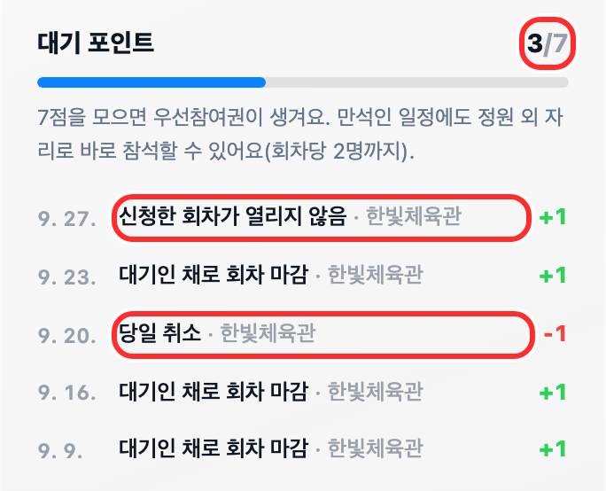

포인트 적립 조건
+1대기로 끝난 모임
- 조건
- 대기로 신청했는데 모임이 끝날 때까지 자리가 나지 않았을 때
- 제외
- 대기 중에 현장에서 합류한 경우(콕 제출이 확인되고 코트 명단에 오름)
+1열리지 않은 모임
- 조건
- 신청(참석·늦참·대기)을 끝까지 유지했는데, 운영진이 [경기 시작]을 누르지 않고 끝난 모임. 인원이 모자라 무산된 주말벙이 대표적이에요.
- 제외
- 중간에 신청을 취소한 경우
−1당일 취소
- 조건
- 대관 모임에서, 참석이 확정된 상태로 모임 당일(0시부터)에 직접 취소했을 때
- 제외
- 대관하지 않는 모임 · 전날까지 취소 · 확정되고 1시간 안의 취소 · 늦참이나 대기 상태에서 취소 · 운영진이 명단에서 뺀 경우
- 환원
- 그 모임이 결국 열리지 않으면 1점을 돌려드려요
−1불참
- 조건
- 참석 확정이었는데, 경기가 시작된 뒤 모임이 끝날 때까지 콕 제출이 확인되지 않았거나 코트 명단에서 빠졌을 때
- 제외
- 모임이 열리지 않은 경우
- 당일 취소 감점만 대관 모임에 적용되고, 나머지는 모든 모임에 똑같이 적용돼요.
- 한 모임에서 쌓이는 건 최대 1점이에요. 0점 아래로는 내려가지 않고, 7점에서 멈춰요.
- 게스트는 대상이 아니에요.

대기 중인 일정 카드에서 지금 점수를 볼 수 있어요.
우선참여권 쓰기
7점이 되면 화면 위 가운데에 티켓 표시가 생겨요. 만석인 일정에서 참석하기를 누르세요.

우선참여권 사용을 누르면 7점을 쓰고 바로 참석이 확정돼요.

- 한 모임에 2명까지 쓸 수 있어요. 정원에 여유가 있으면 묻지 않고 포인트도 쓰지 않아요.
- 전날까지 취소하거나 모임이 취소·무산되면 7점을 돌려드려요. 당일 취소나 불참이면 돌려드리지 않아요.
내 포인트 보기
오른쪽 위 ⋮를 누르고 내 정보로 들어가세요.


아래쪽 대기 포인트 칸에 지금 점수와 언제, 왜 바뀌었는지가 나와요.
